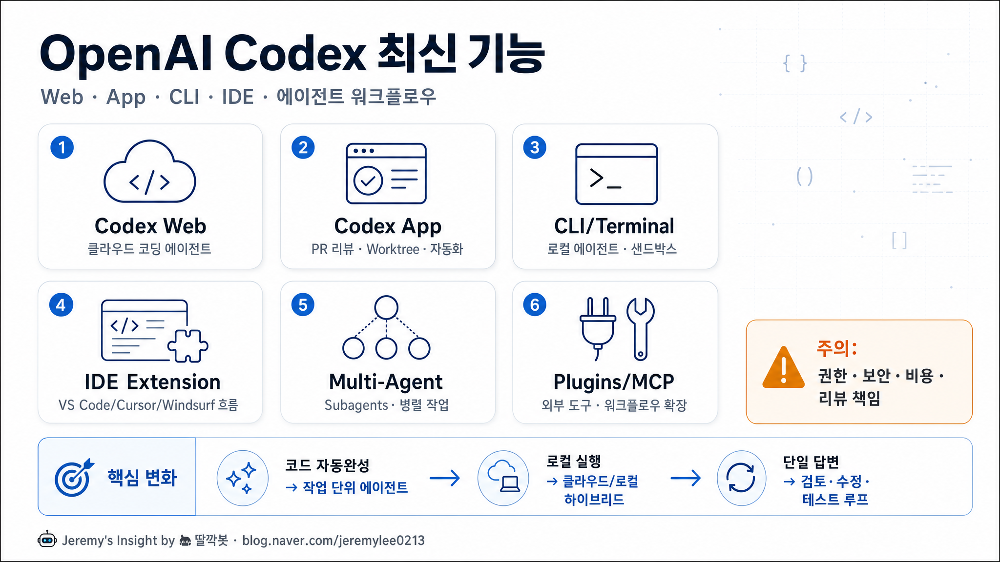

OpenAI Codex 최신버전 기능 소개 보고서

핵심 결론
- 🚀 Codex는 코드 자동완성 도구가 아니라 작업 단위 코딩 에이전트로 이동 중임
- 🧩 최신 축은 Web/App/CLI/IDE를 잇는 하이브리드 개발 워크플로우임
- ⚠️ 강력해진 만큼 권한·보안·리뷰 책임을 설계하지 않으면 위험도 같이 커짐
한 장 요약 표
| 영역 | 최신 기능/방향 | 쓰임새 | 강점 | 주의점 |
|---|---|---|---|---|
| Codex Web | 클라우드 기반 코딩 에이전트 | 이슈 처리, 코드 수정, 장시간 작업 | 로컬을 붙잡지 않고 비동기 작업 가능 | 저장소 권한과 비밀정보 관리 필요 |
| Codex App | PR 리뷰, Worktree, 자동화, 로컬 환경 | 앱 형태의 코딩 파트너 | 리뷰·수정·테스트 루프를 한곳에서 처리 | 결과 검증은 개발자 책임 |
| CLI/Terminal | 로컬 터미널 에이전트, 샌드박스, 권한 프로필 | 기존 개발 흐름에 직접 삽입 | 빠르고 자동화하기 쉬움 | 쉘 권한 설정을 보수적으로 해야 함 |
| IDE Extension | VS Code/Cursor/Windsurf 흐름 | 에디터 안에서 코드 이해·수정 | 컨텍스트 전환 감소 | IDE별 지원 상태 확인 필요 |
| Multi-Agent/Subagents | 병렬 하위 에이전트, 명시적 설정 | 조사·구현·리뷰 분리 | 큰 작업 분해에 유리 | 조율 실패 시 중복/충돌 가능 |
| Plugins/MCP | 외부 도구, 플러그인, 훅 연동 | 사내 도구·워크플로우 확장 | 맞춤 자동화 가능 | 공급망/권한 리스크 |
주요 분석
1. Codex의 포지션 변화
Codex의 핵심 변화는 “코드를 한 줄 추천하는 도구”에서 “작업을 맡기는 에이전트”로 바뀌고 있다는 점이다. 사용자는 단순히 함수 하나를 요청하는 것이 아니라, 이슈 분석, 파일 수정, 테스트 실행, PR 피드백 반영 같은 흐름 전체를 맡길 수 있다.
이 변화는 개발자의 역할도 바꾼다. 앞으로 중요한 능력은 코드를 얼마나 빨리 타이핑하느냐보다, 작업 범위·검증 기준·권한 경계를 얼마나 명확히 주느냐가 된다.
2. Web/App/CLI/IDE로 나뉜 사용 흐름
Codex Web은 클라우드에서 비동기 작업을 맡기는 방향이다. 로컬 개발환경을 계속 켜두지 않아도, 이슈나 저장소 기반 작업을 에이전트에게 넘기는 용도에 가깝다.
Codex App은 리뷰, Worktree, 자동화, 로컬 환경 같은 개발자 워크플로우를 앱 중심으로 묶는다. CLI는 터미널을 선호하는 개발자에게 가장 직접적인 인터페이스이고, IDE 확장은 기존 편집기 흐름 안에서 Codex를 쓰게 만든다.
3. 최신 CLI/오픈소스 릴리스에서 보이는 방향
OpenAI Codex GitHub 릴리스 기준으로 안정 릴리스 rust-v0.128.0에는 지속형 /goal 워크플로우, codex update, TUI 키맵, Plan Mode 개선, 권한 프로필 확장, 플러그인 워크플로우, 외부 에이전트 세션 import, MultiAgentV2 설정 명시화 등이 포함됐다.
이는 Codex가 단순 대화형 CLI를 넘어 “작업 상태를 유지하고, 권한을 나누고, 플러그인과 하위 에이전트를 붙이는 운영체제형 코딩 도구”로 진화하고 있음을 보여준다.
4. PR 리뷰와 검증 루프 강화
공개 문서의 Codex App 영역은 PR 리뷰, 변경 파일 확인, 리뷰 코멘트 반영, 산출물 미리보기 같은 흐름을 강조한다. 이는 코드 생성보다 더 중요한 지점이다.
AI 코딩에서 실패가 자주 발생하는 곳은 “코드를 만들었는가”가 아니라 “정말 맞게 바뀌었는가”다. 따라서 Codex의 경쟁력은 생성 능력보다 리뷰·테스트·수정 루프를 얼마나 자연스럽게 연결하느냐에 달려 있다.
5. 모델 측면: Codex 전용 모델 라인
OpenAI 개발자 문서에는 Codex에서 사용할 수 있는 모델 라인업 변화가 언급된다. ChatGPT 로그인 사용자는 특정 Codex 모델군에서 최신 가용 모델로 전환되는 흐름이 있고, API 키 사용자는 API 지원 모델을 선택할 수 있는 구조다.
다만 모델명 자체보다 중요한 것은 “코딩 작업에 최적화된 추론, 도구 사용, 장시간 작업 지속성”이다. 최신 Codex의 차별점은 모델 하나가 아니라 제품·권한·실행환경·리뷰 흐름의 결합이다.
반대 의견과 리스크
| 리스크 | 설명 | 대응 |
|---|---|---|
| 과신 | 에이전트가 테스트를 통과해도 요구사항을 오해할 수 있음 | 명확한 acceptance criteria 작성 |
| 보안 | 저장소, 환경변수, 비밀키, 배포 권한에 접근할 수 있음 | 샌드박스·권한 프로필·승인 단계 사용 |
| 비용 | 장시간 작업, 병렬 에이전트, 반복 테스트가 비용을 키울 수 있음 | 작업 단위 쪼개기, 중간 검토, 제한 설정 |
| 품질 편차 | 큰 리팩터링에서 문맥 누락·부분 수정 가능 | 작은 PR, 테스트 우선, 코드리뷰 필수 |
| 도구 종속 | 워크플로우가 특정 에이전트에 과하게 맞춰질 수 있음 | Git/테스트/문서 기준은 독립 유지 |
| 플러그인 공급망 | 외부 플러그인·MCP 연동이 새로운 공격면이 됨 | 신뢰된 도구만 허용, 최소 권한 원칙 |
실무 적용 추천
개인 개발자
- 작은 기능 구현, 버그 수정, 문서화, 테스트 보강부터 시작하는 것이 좋다
AGENTS.md나 프로젝트 규칙 파일을 정리하면 결과 품질이 올라간다- “구현해줘”보다 “이 테스트를 통과하는 최소 변경을 해줘”가 더 안전하다
팀/회사
- Codex 사용 전에 권한 정책, 비밀정보 노출 방지, 리뷰 책임자를 정해야 한다
- PR 단위로 작게 맡기고, 자동 테스트와 사람 리뷰를 반드시 거쳐야 한다
- 플러그인/MCP는 생산성을 크게 올리지만 보안 검토 없이는 위험하다
추천 워크플로우
- 요구사항을 이슈 또는 체크리스트로 쪼갠다
- Codex에 한 번에 하나의 작은 작업만 맡긴다
- 테스트/린트/타입체크를 명시한다
- 변경 diff를 사람이 리뷰한다
- 통과한 패턴은 AGENTS.md와 자동화 규칙으로 누적한다
최종 판단
OpenAI Codex 최신 흐름은 “AI가 코드를 써준다”보다 “AI가 개발 작업 단위를 처리한다”에 가깝다. 가치가 큰 영역은 신규 코드 초안보다, 레거시 수정, 테스트 보강, PR 피드백 반영, 반복 작업 자동화다.
하지만 이 도구를 개발자 없이 돌리는 것은 아직 위험하다. 가장 좋은 사용법은 Codex를 주니어 개발자가 아니라 “빠른 실행자 + 검토 대기자”로 다루는 것이다.
출처
- OpenAI Developers, Codex Changelog
https://developers.openai.com/codex/changelog
- OpenAI Developers, Codex Docs / App / CLI / IDE / Web sections
https://developers.openai.com/codex/
- OpenAI Codex GitHub repository
https://github.com/openai/codex
- OpenAI Codex GitHub Releases,
rust-v0.128.0, published 2026-04-30
https://github.com/openai/codex/releases
- GitHub Blog, OpenAI Codex model availability references
https://github.blog/changelog/
Jeremy's Insight by 🤖 딸깍봇 https://blog.naver.com/jeremylee0213